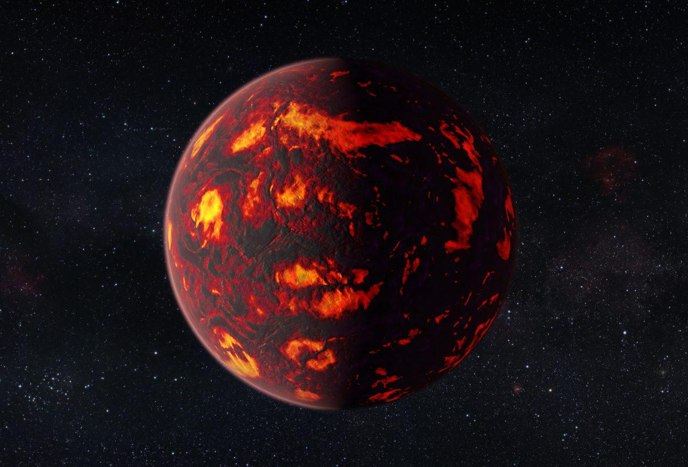
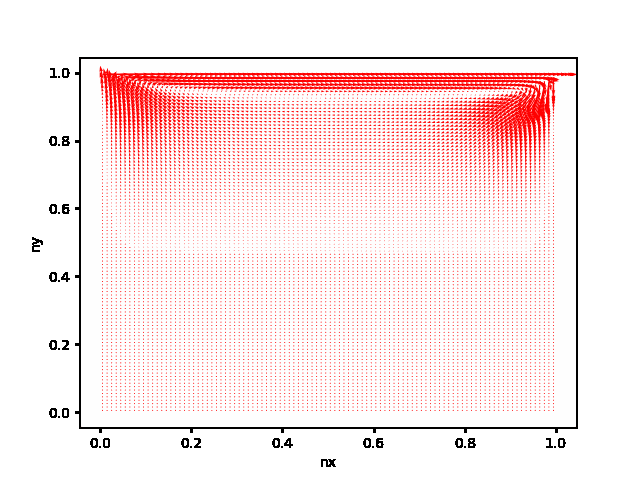
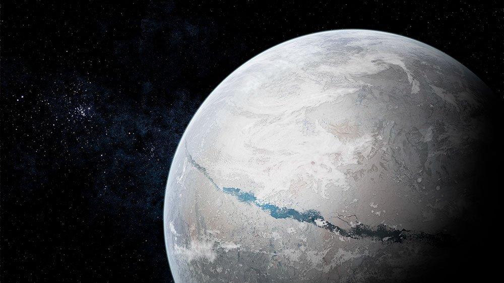

We are in a golden age of space exploration. Advances in telescope technology have allowed humanity to observe
and study planets in other solar systems (exoplanets). The James Webb Space Telescope (JWST) will soon transmit its
findings on close-in rocky exoplanets that, through strong gravitational interactions with their nearby sun,
are tidally locked. Tidal locking means that the side of the planet facing the star never changes,
just as the side of the moon that we see here on Earth is always the same. Previous studies suggest that
these planets have permanent magma oceans due to exposure to intense sunlight.
My collaborators and I have developed a numerical model in Python to simulate the climates of
these unusually warm worlds. For a more detailed description of our project, check out the abstract
for our talk at the 2022 & 2023 American Geophysical Union (AGU) conference.
In this project, I trained a supervised machine learning model (Naive Bayes) affectionately named
‘Q&AI’ that classifies textual data as human- or AI-generated. I randomly drew 'n' words from a
database of English words with broadly-understood topics (e.g. airplane, Congress, apple).
I used the Wikipedia API to request a text abstract on each topic in json format.
This is our human-generated text. I then used the OpenAI API to request a short
summary on each topic from ChatGPT in json format. This is our AI-generated text. The bag-of-words (BOW)
model was chosen to transform the text into numerical arrays. In the BOW model, features of
the dataset are single words or pairs of words. The numerical value assigned to each feature
corresponds to the number of times that the respective word appears in a sample.
The TF-IDF (term frequency times inverse document frequency) correction is applied to the
arrays to reduce bias from commonly-used words (the, is) and text length. Subsets of the
labeled numerical data were used to train and test a Naive Bayes classifier.
The previous steps were combined into a pipeline. Optimal model performance was obtained through a
grid search of several tuning parameters. The tuned model was capable of detecting AI-generated text
with an accuracy of 75%! For additional details or to download and run the model yourself, check out my
github.

This Python solver simulates time-varying fluid flow in a rectangular domain that is driven by a moving upper lid.
I wrote and submitted the solver as a final project for a graduate course on computational fluid dynamics (CFD)
in the Department of Mechanical and Aerospace Engineering. For additional details or to download and run the solver,
check out my github.

100s of millions of years ago during a period known as the Neoproterozoic, the Earth was encased in
flowing ice sheets that may have extended from the poles to the equator. The frigid climate during this period is
called the "Snowball Earth”. I was brought onto the project by collaborators Dorian Abbot (University of Chicago)
and Eli Tziperman (Harvard University). Previous studies of the Snowball Earth had assumed that the ice sheet was
global in order to avoid the complex physics that arises at the ice sheet edges. Together, we developed a novel
mathematical framework to simulate the gaps that existed between the ice sheet and the open ocean
(where it is hypothesized that microbial life survived the Snowball extinction event).
I built and tested the numerical model in MATLAB and applied it to a Snowball Earth scenario,
presenting my results at multiple conferences. For additional details or to download and run the model, check out my
github.